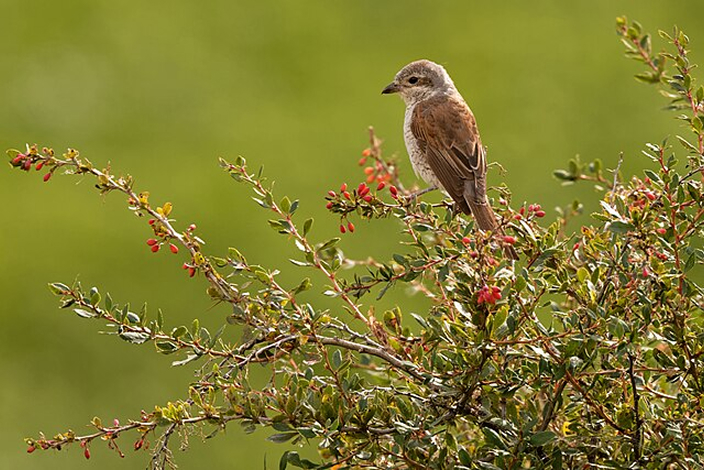
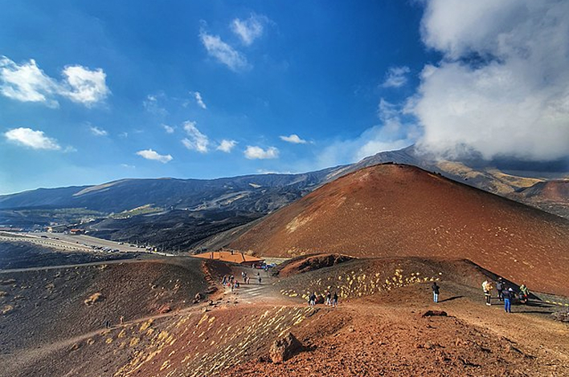
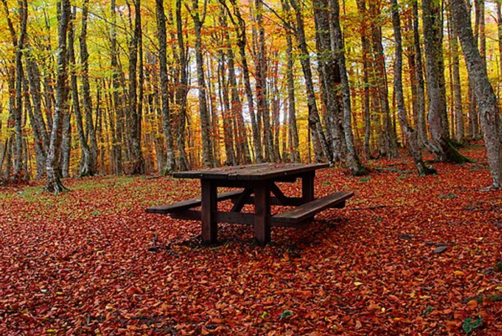
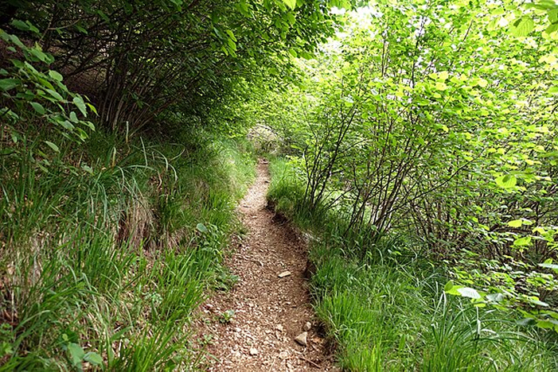

I parchi naturali italiani offrono esperienze uniche per esplorare paesaggi straordinari: trekking panoramici, birdwatching, vulcani attivi e sentieri immersi nella biodiversità di monti e foreste.

Il Parco Nazionale del Gran Paradiso è un paradiso per gli amanti del birdwatching. Qui puoi osservare aquile reali, gipeti, e rapaci alpini che solcano i cieli, oltre a specie migratorie rare. I punti di osservazione si trovano lungo i sentieri più tranquilli del parco.

Esplorare l’Etna significa camminare su un vulcano vivo, circondati da paesaggi lunari e crateri fumanti. Escursioni guidate portano alla scoperta di colate laviche recenti, formazioni uniche e vedute spettacolari sul Mar Ionio e la Sicilia orientale.

Nel Parco Nazionale del Pollino, i percorsi naturalistici conducono tra boschi di faggi, distese di pini loricati e gole profonde. Ideali per gli escursionisti, i sentieri offrono la possibilità di incontrare lupi appenninici e cervi, oltre a scoprire panorami straordinari.

L'Alta Via delle Dolomiti è una rete di sentieri spettacolari che attraversano cime, vallate e paesaggi mozzafiato. Ogni tappa collega rifugi alpini, offrendo un'esperienza unica tra natura incontaminata, flora endemica e panorami patrimonio UNESCO.